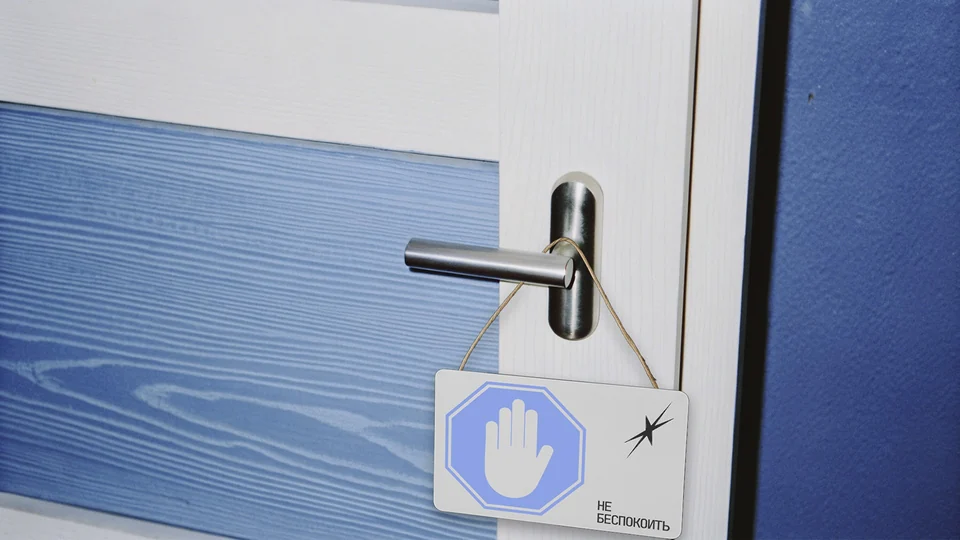
Небесная канцелярия
Учебный проект, где человеческие просьбы и переживания подаются как официальные обращения в офис.
Человек в отчаянии, он «обращается к небесам», а там, в условном офисе, «бывшие люди» получают письма, направляют в нужный отдел, регистрируют и ищут решения.
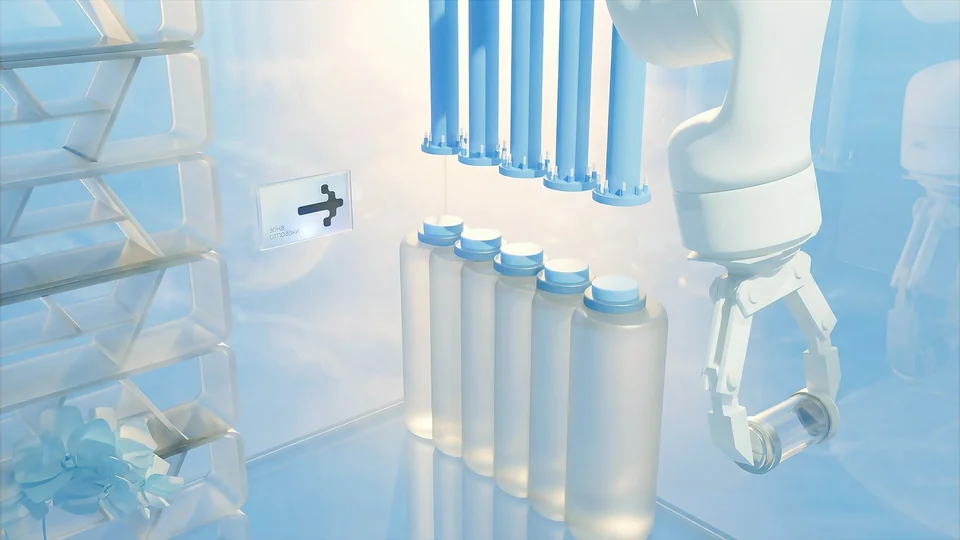
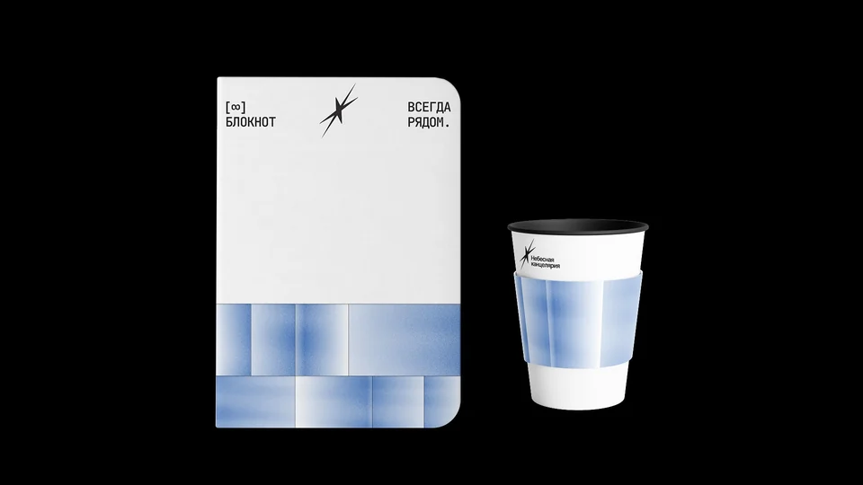
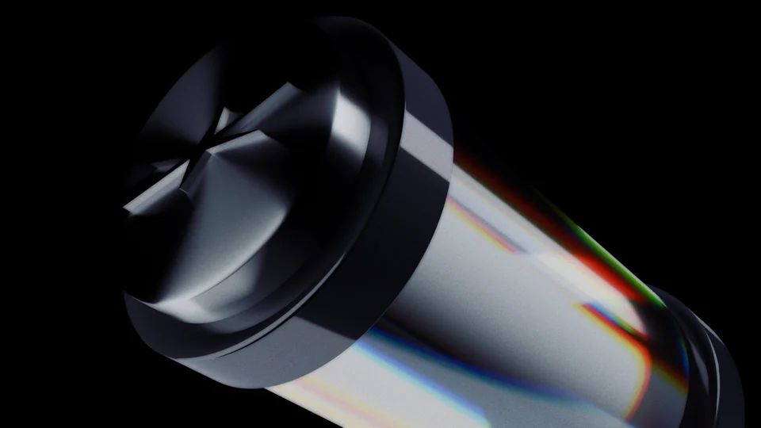
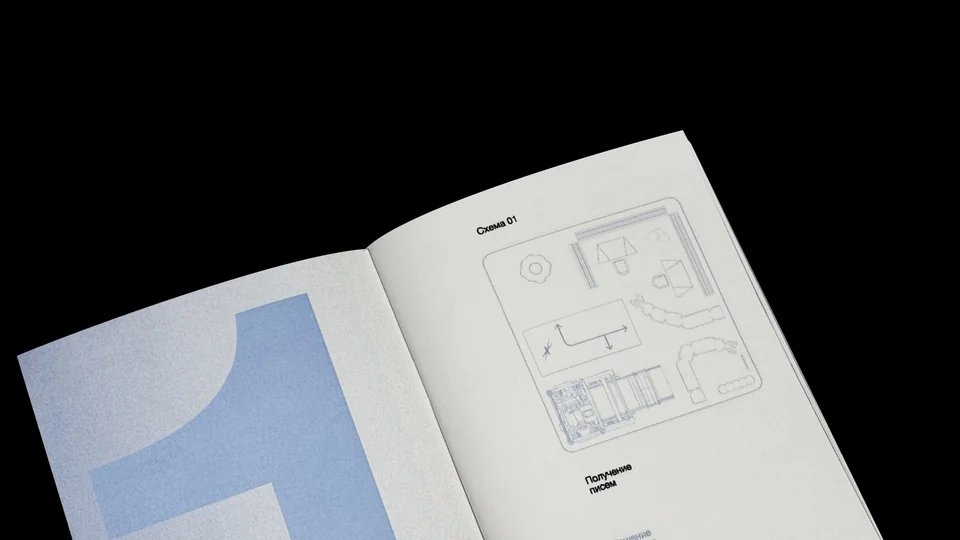
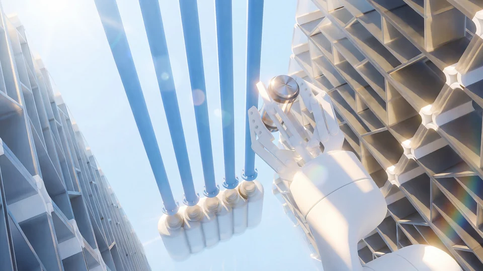
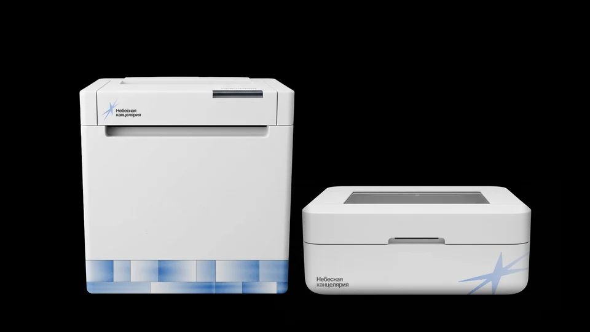
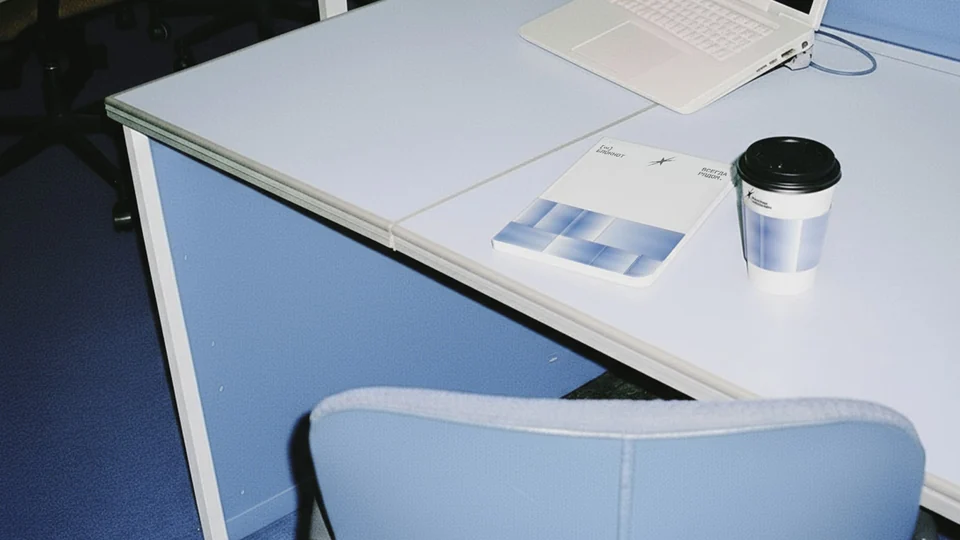
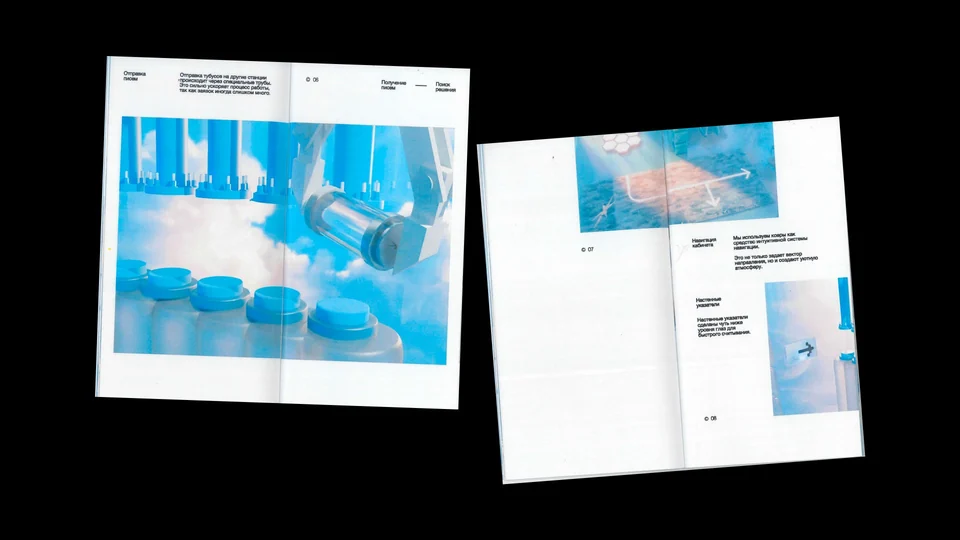
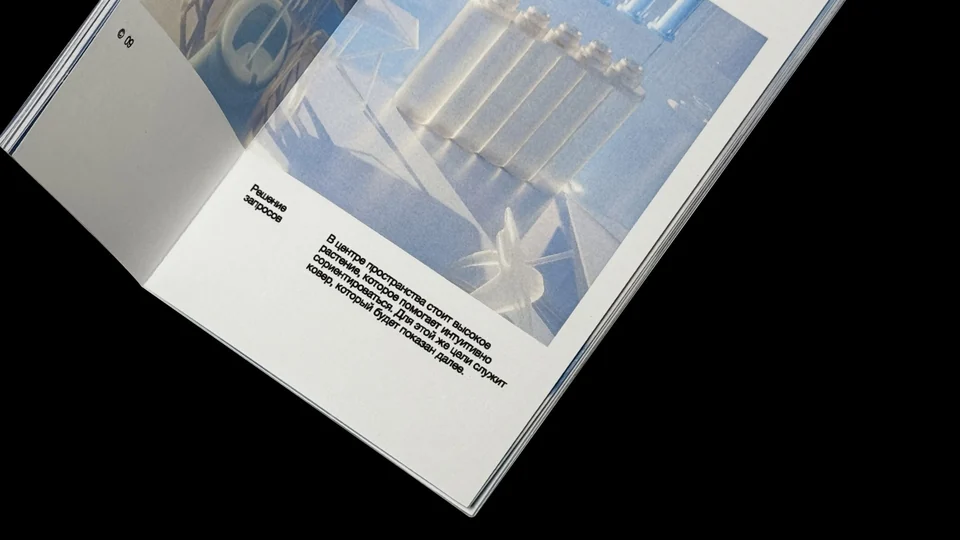
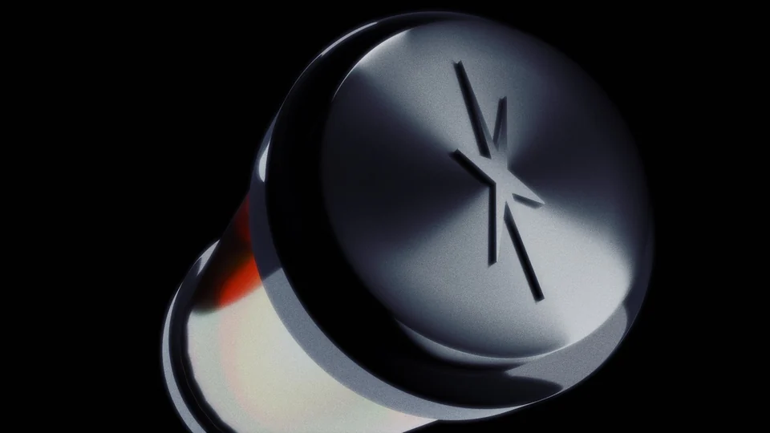
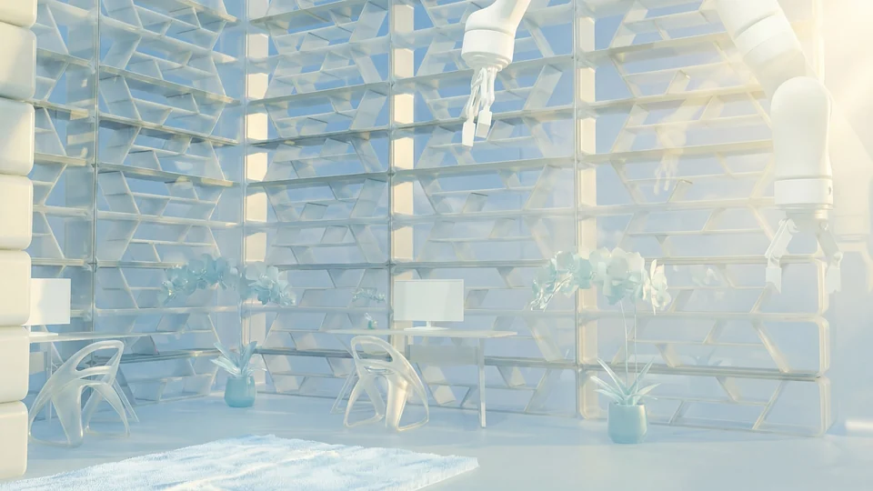
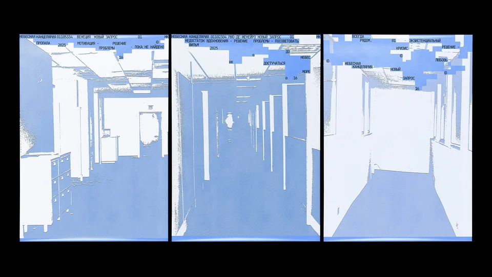
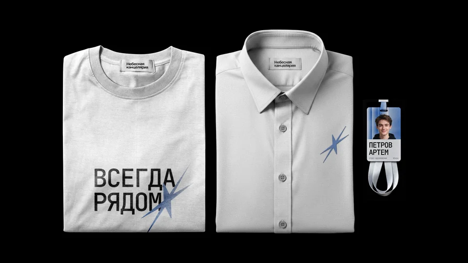
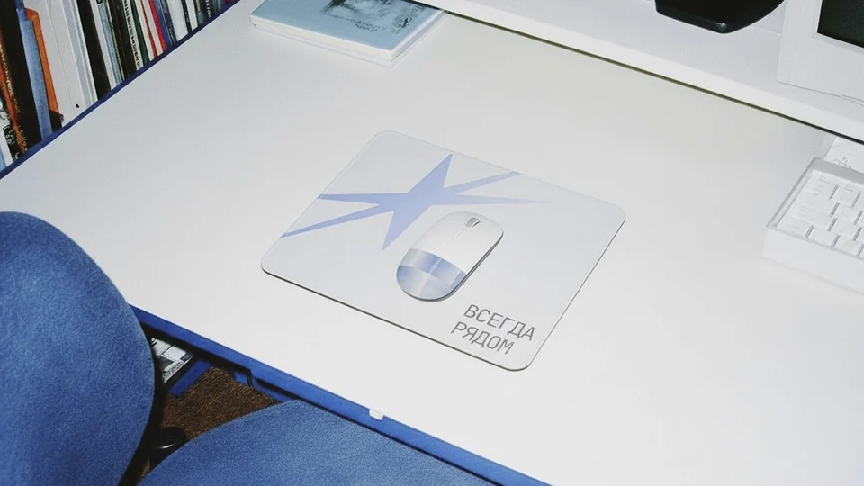
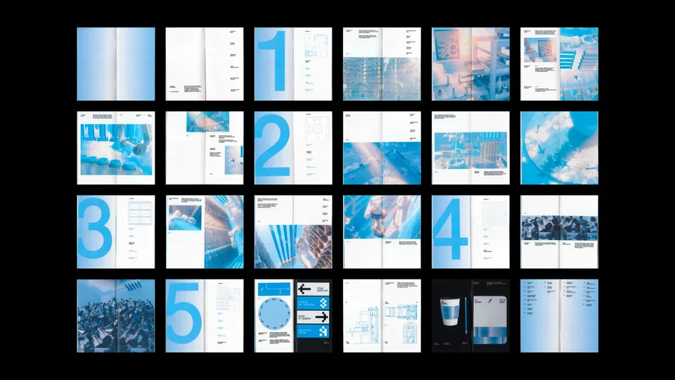